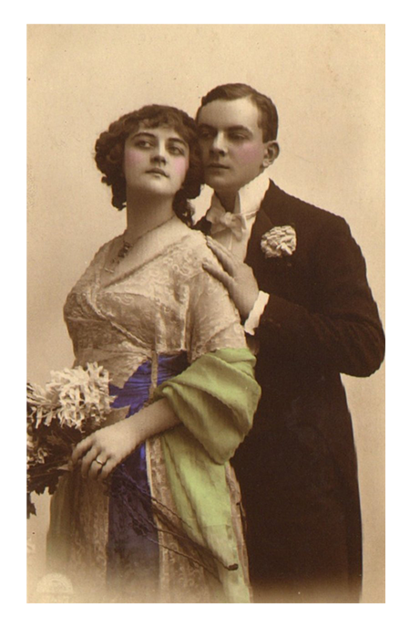

The Little Log Cabin Diner opened up in 1924 by Ma and Paw Parker. They had the wonderful idea to start a restaurant that served comfort food at reasonable prices to the people of their fine city. Since then the Little Log Cabin Diner has sought to provide service and fine food to all. It is a testament to Ma and Pa Parker that their vision still lives on today. We have 24 diner in 14 states and are looking to open more. We serve Breakfast, Lunch and Dinner in a fine atmosphere. Please stop in at any of our restaurants and satify your appetite with our comfort food from heaven.
